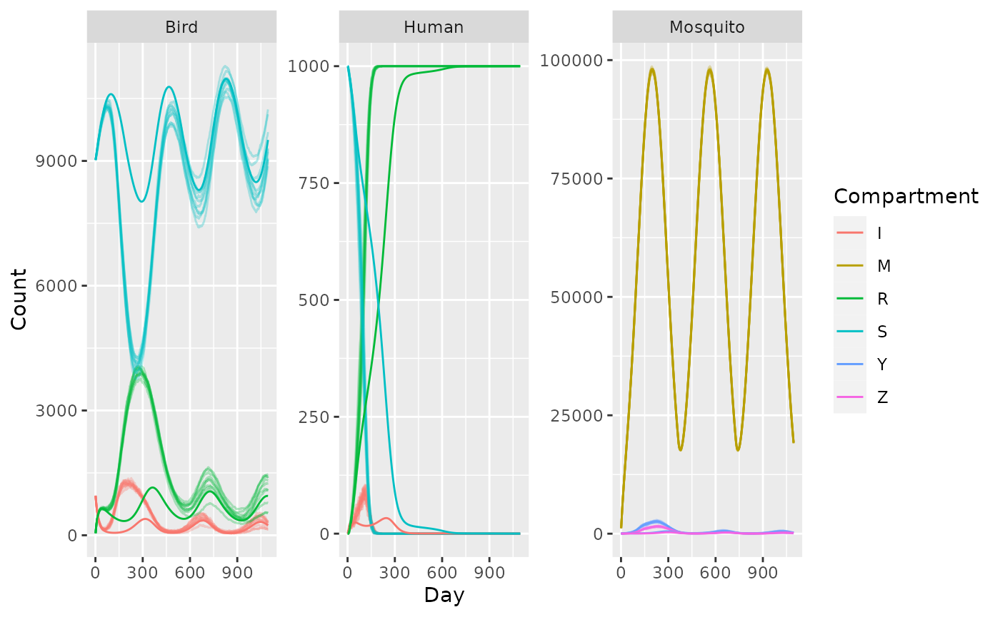

library(MicroMoB)
library(MicroWNV)
#>
#> Attaching package: 'MicroWNV'
#> The following objects are masked from 'package:MicroMoB':
#>
#> compute_bloodmeal, compute_q
library(ggplot2)
library(data.table)
library(parallel)In MicroWNV, the goal is to get various models fill in a set of component interfaces; if you want to write a new aquatic model, you fill in the interface and then plug into the existing framework, and let the simulation handle the rest! Here we present the most simple case of a Ross-Macdonald mosquito model linked to a trace derived (exogeneously forced) model of emergence, a SIRS (Susceptible-Infectious-Recovered-Susceptible) adult bird model lined to a forced model of fledglings (immature birds), and a SIR (Susceptible-Infectious-Recovered) human model.
In this model there is only 1 patch and 1 human strata. We set up the model parameters here. We let mosquito emergence be seasonal, so \(\lambda\) varies with time, peaking in the “middle” of the year with 50 mosquitoes emerging per day. We will run the simulation for 3 years.
We set up the birds with an offset signal for birth of fledglings peaking at 5 fledglings emerging per day at the start of the year.
Please note that these specific parameter values have not been calibrated nor are representative of WNV, but instead chosen to illustrate interesting dynamics. Note however that c, the transmission efficiency from infected humans to mosquitoes is 0, as birds are the only competent hosts for WNV transmission to mosquitoes.
patches <- 1
n <- 1
tmax <- 3 * 365
# human parameters
theta <- diag(n)
SIR <- matrix(data = c(1e3, 0, 0), nrow = 1, ncol = 3)
b <- 0.55
c <- 0
gamma <- 1/7
# bird parameters
theta_B <- diag(patches)
SIR_B <- matrix(data = c(9e3, 1e3, 0), nrow = 1, ncol = 3)
gammaB <- 1/20
rB <- 1/100
mu <- 1/365
# mosquito parameters
f <- 0.3
q <- 0.5
eip <- 10
p <- 0.95
M <- 500
Y <- 50
Z <- 5
psi <- diag(patches)
lambda <- dnorm(x = 1:365, mean = 180, sd = 90)
lambda <- lambda * (5e3/max(lambda))
lambda <- t(replicate(patches, lambda))
fledge_lambda <- dnorm(x = c(182:365, 365:185), mean = 180, sd = 90)
fledge_lambda <- fledge_lambda * (50/max(fledge_lambda))
fledge_lambda <- t(replicate(patches, fledge_lambda))MicroWNV simulation
Now we set up the model and run a deterministic simulation.
mod <- make_MicroMoB(tmax = tmax, p = patches)
# humans
setup_humans_SIR(mod, stochastic = FALSE, theta = theta, H = sum(SIR), SIR = SIR, b = b, c = c, gamma = gamma)
# birds
setup_birds_SIRS(mod, stochastic = FALSE, fledge_disperse = theta_B, theta = theta_B, SIR = SIR_B, mu = mu, gamma = gammaB, r = rB)
setup_fledge_trace(mod, stochastic = FALSE, trace = fledge_lambda)
# mosquitoes
setup_mosquito_RM(mod, stochastic = FALSE, f = f, q = q, eip = eip, p = p, psi = psi, M = M, Y = Y, Z = Z)
setup_aqua_trace(mod, stochastic = FALSE, lambda = lambda)
# output
det_out <- rbind(
data.table(Day = rep(1:tmax, times = 3), Count = NaN, Compartment = rep(c("S", "I", "R"), each = tmax), Species = "Human"),
data.table(Day = rep(1:tmax, times = 3), Count = NaN, Compartment = rep(c("S", "I", "R"), each = tmax), Species = "Bird"),
data.table(Day = rep(1:tmax, times = 3), Count = NaN, Compartment = rep(c("M", "Y", "Z"), each = tmax), Species = "Mosquito")
)
setkeyv(det_out, c("Day", "Species"))
# run it
while (mod$global$tnow <= tmax) {
# compute biting
MicroWNV::compute_bloodmeal(model = mod)
# update state
step_aqua(model = mod)
step_mosquitoes(model = mod)
step_fledge(model = mod)
step_birds(model = mod)
step_humans(model = mod)
# output
det_out[Day == mod$global$tnow & Compartment %in% c("S", "I", "R") & Species == "Human", "Count" := as.vector(mod$human$SIR)]
det_out[Day == mod$global$tnow & Compartment %in% c("S", "I", "R") & Species == "Bird", "Count" := as.vector(mod$bird$SIR)]
det_out[Day == mod$global$tnow & Compartment %in% c("M", "Y", "Z") & Species == "Mosquito", "Count" := c(mod$mosquito$M, mod$mosquito$Y, mod$mosquito$Z)]
# tick
mod$global$tnow <- mod$global$tnow + 1L
}Now we draw 10 trajectories from the stochastic simulation, and plot output. We plot the cloud of stochastic trajectories as faint lines and the deterministic solution as solid lines.
sto_out <- mclapply(X = 1:10, FUN = function(runid) {
mod <- make_MicroMoB(tmax = tmax, p = patches)
setup_humans_SIR(mod, stochastic = TRUE, theta = theta, H = sum(SIR), SIR = SIR, gamma = gamma)
setup_birds_SIRS(mod, stochastic = TRUE, fledge_disperse = theta_B, theta = theta_B, SIR = SIR_B, mu = mu, gamma = gammaB, r = rB)
setup_fledge_trace(mod, stochastic = TRUE, trace = fledge_lambda)
setup_mosquito_RM(mod, stochastic = TRUE, f = f, q = q, eip = eip, p = p, psi = psi, M = M, Y = Y, Z = Z)
setup_aqua_trace(mod, stochastic = TRUE, lambda = lambda)
# output
out <- rbind(
data.table(Day = rep(1:tmax, times = 3), Count = NaN, Compartment = rep(c("S", "I", "R"), each = tmax), Species = "Human"),
data.table(Day = rep(1:tmax, times = 3), Count = NaN, Compartment = rep(c("S", "I", "R"), each = tmax), Species = "Bird"),
data.table(Day = rep(1:tmax, times = 3), Count = NaN, Compartment = rep(c("M", "Y", "Z"), each = tmax), Species = "Mosquito")
)
setkeyv(out, c("Day", "Species"))
# run it
while (mod$global$tnow <= tmax) {
# compute biting
MicroWNV::compute_bloodmeal(model = mod)
# update state
step_aqua(model = mod)
step_mosquitoes(model = mod)
step_fledge(model = mod)
step_birds(model = mod)
step_humans(model = mod)
# output
out[Day == mod$global$tnow & Compartment %in% c("S", "I", "R") & Species == "Human", "Count" := as.vector(mod$human$SIR)]
out[Day == mod$global$tnow & Compartment %in% c("S", "I", "R") & Species == "Bird", "Count" := as.vector(mod$bird$SIR)]
out[Day == mod$global$tnow & Compartment %in% c("M", "Y", "Z") & Species == "Mosquito", "Count" := c(mod$mosquito$M, mod$mosquito$Y, mod$mosquito$Z)]
# tick
mod$global$tnow <- mod$global$tnow + 1L
}
out[, "Run" := as.integer(runid)]
return(out)
})
sto_out <- do.call(rbind, sto_out)The results are plotted below.
ggplot(sto_out) +
geom_line(aes(x = Day, y = Count, color = Compartment, group = interaction(Run, Compartment)), alpha = 0.3) +
geom_line(data = det_out, aes(x = Day, y = Count, color = Compartment)) +
facet_wrap(. ~ Species, scales = "free")